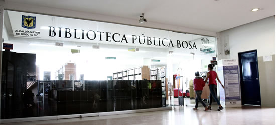
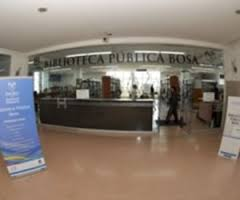

La Biblioteca Pública de Bosa está ubicada en el tercer piso del Centro Comercial Metro Recreo. Hace parte de la red capital pública de bibliotecas, del programa de la Secretaría de Cultura, Recreación y Deporte (SCRD) y la Alcaldía Mayor de Bogotá. Su ubicación permite atender alrededor de 551 personas de la localidad número siete, al suroccidente de la ciudad, entre primera infancia, niños, jóvenes, adultos, madres gestantes, personas de la tercera edad, discapacitados y grupos indígenas.
El nombre de la biblioteca se relaciona con su ubicación geográfica. Este vocablo de origen muisca "bosa" significa "cercado para guardar y defender las mieses".
La biblioteca inició su trabajo con la comunidad durante la administración de la Alcaldesa menor, la Dra Aracely Molano, bajo el Decreto No. 1721 de 1982, expedido por la Alcaldía Mayor de Bogotá. Su funcionamiento quedó a cargo de la Secretaría de Educación del Distrito y sus instalaciones se ubicaron en la alcaldía local. La biblioteca cuenta con una Sala Infantil, de Lectura y una colección cerrada de aproximadamente 4.500 libros distribuidos en todas las áreasdel conocimiento.
Posteriormente, en 1995, se suscribió un contrato entre la Secretaría de Educación, el Distrito Capital de Santafé de Bogotá, el Banco de la República y la biblioteca Luis Ángel Arango para la capacitación en servicios y la entrega de material bibliográfica.
Luego, en septiembre de 2000 la biblioteca pasó a ser parte de la Red Capital de Bibliotecas P&ublicas - BibloRed, de esta manera, se fortalecieron los recursos, programas y servicios ofrecidos a la comunidad.
Desde el 2010, se encuentra ubicada en el tercer piso de l Centro Comercial Metro Recreo.

La biblioteca está dividida en las salas: Infantil, General, Literatura e Internet y Multimedia. Además, cuenta con una colección aproximada de 21.000 materiales, entre libros, audiovisuales, revistas e historietas, juegos didácticos y de mesa, periódicos y publicaciones seriadas en todas las áreas del conocimiento, incluyendo material bibliográfico en sistema braile y macro tipos para usuarios en condición de discapacidad.

Así mismo, la biblioteca presta servicio de catálogo en línea, portátilesy tabletas digitales, acceso gratuito a Internet, consulta en Sala y préstamo esterno de libros.
A través de los programas de extensi&oacten, la biblioteca fomenta la lectura y escritura en los colegios distritales y privados de la ciudad, jardines infantiles, poblaciones en situación de vulnerabilidad por violencia, abandono o situación laboral copmo hogares de madres comunitarias, centro de atención a menores, instituciones de atención al adulto mayor y centros de atención a la población desplazada.
La biblioteca Pública de Bosa, funciona como un espacio reservado para acceder al conocimiento, la investigación, la lectura, la escritura y la recreación.